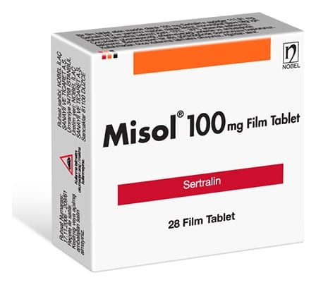

Misol 100 mg Film Kaplı Tablet, 28 Adet

Ne için kullanılır
KT · Bölüm 1MİSOL oblong, bombeli, bir yüzü tek çentikli, beyaz renkli film kaplı tablettir. Her tablet etkin madde olarak 100 mg sertraline eşdeğer sertralin HCl içerir. 28 tabletlik blisterler ile kullanıma sunulmaktadır.
MİSOL, sertralin adlı etkin maddeyi içermektedir ve Seçici Serotonin Gerialım İnhibitörleri (SSGİ’ler) adı verilen, ruhsal çöküntüye (depresyona) veya takıntılı davranışlara karşı etkili olan ilaçlar grubuna dahildir.
MİSOL, ruhsal çökkünlük (depresyon), saplantılı-takıntılı bozukluk (obsesif kompulsif bozukluk–[OKB]), panik bozukluğu, duygusal olarak kişiyi etkileyen bir olaydan sonra oluşabilen travma sonrası stres bozukluğu (TSSB), sosyal fobi (kişinin kaygı nedeniyle toplumsal faaliyetlerden kaçınması, içine kapanması), adet dönemi öncesi duygulanım bozukluğu, aşırı huzursuzluk (premenstrüel disforik bozukluk–[PMDB]) tedavilerinde kullanılır. MİSOL uyku ilacı veya sakinleştirici değildir. Doktorunuz hastalığınızı tedavi etmek için bu ilacın uygun olduğuna karar vermiştir.
Diğer antidepresanlarla da olduğu gibi, tedavinin ilk birkaç haftasında belirgin bir iyileşme sağlanamayabilir ve depresyonlu hastaların intihar girişiminde bulunması olasıdır.